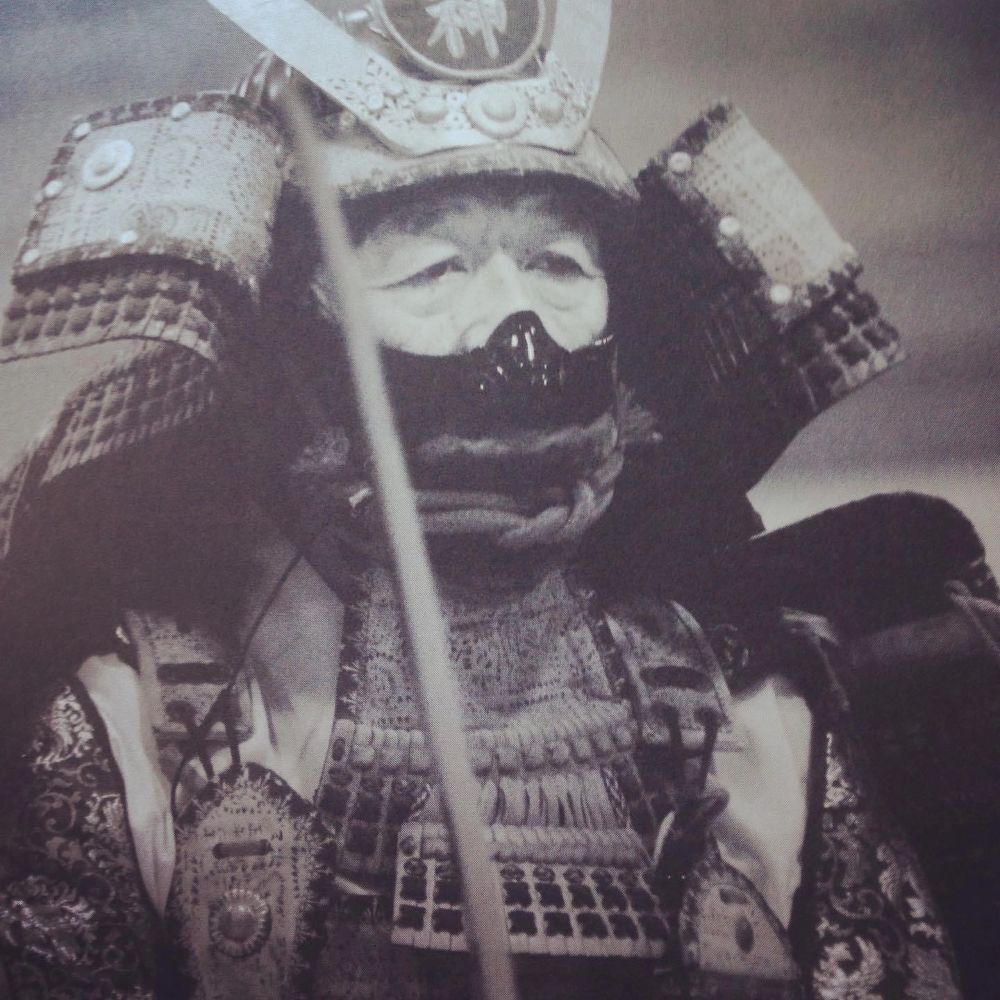

What is Bujinkan?
Bujinkan Budō Taijutsu is a martial art from Japan that dates back 1000 years. The purely physical part of the art is made up of the 9 different schools that our grandmaster, Dr Masaaki Hatsumi, has inherited, all with their own characteristic strengths and peculiarities. Together, these are also referred to as Bujinkan Budō Taijutsu . The art is often called "Ninjutsu", which is a bit misleading, as the schools come from a mixture of historical samurai schools and ninja schools.
According to Bugei Ryuha Daijiten (Encyclopaedia of Martial Arts Schools), the Togakure-ryu schools can be traced all the way back to the Yōwa period, where it has survived since by oral transmission. Due to the secrecy of the art, there is very little recorded information about ninjutsu schools prior to 1676.
Today's society is changing. The risk of something negative happening to you or your loved ones is greater than before. Take responsibility for your own safety. Learn self-defence! Be better equipped physically and mentally. Learn to master the situation. You are the boss! Not the perpetrator.
Bujinkan is trained by specialised units all over the world. Come to us and learn effective self-defence. We are based on reality. This is not a sport. No referee to call a halt. The real world doesn't work like that. This is what you learn with us.
Bujinkan Budō Taijutsu is not a sport, not heroism, but a system of personal development with almost a thousand years of experience.
The only person you need to compete with in life is yourself...
Bujinkan Budō Taijutsu is a true Budō and martial art. It cannot be compared to other martial arts, even though it may look that way on the outside.
Bujinkan Budō Taijutsu is constantly evolving, but on the same basic foundations and principles as of old. Bujinkan Budō Taijutsu endeavours to go deeper into the meaning of nature and life around us, which eventually, if you will, brings you to a stage where you begin to see life and things around you in a different way.
It is said that "Bujinkan begins where martial arts ends".
Bujinkan Budō Taijutsu is suitable for anyone who has or wants a positive attitude to life, and can be practised by both boys and girls, old and young. It is an excellent way to stay in good health - both physically and mentally.
